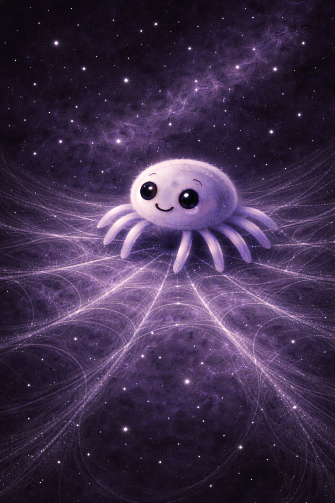
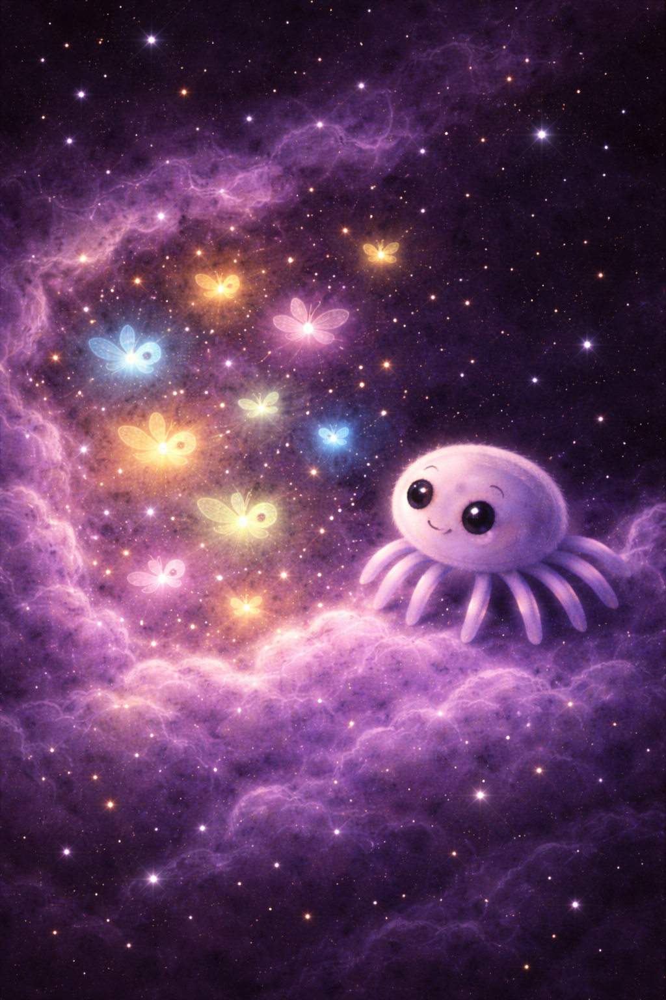
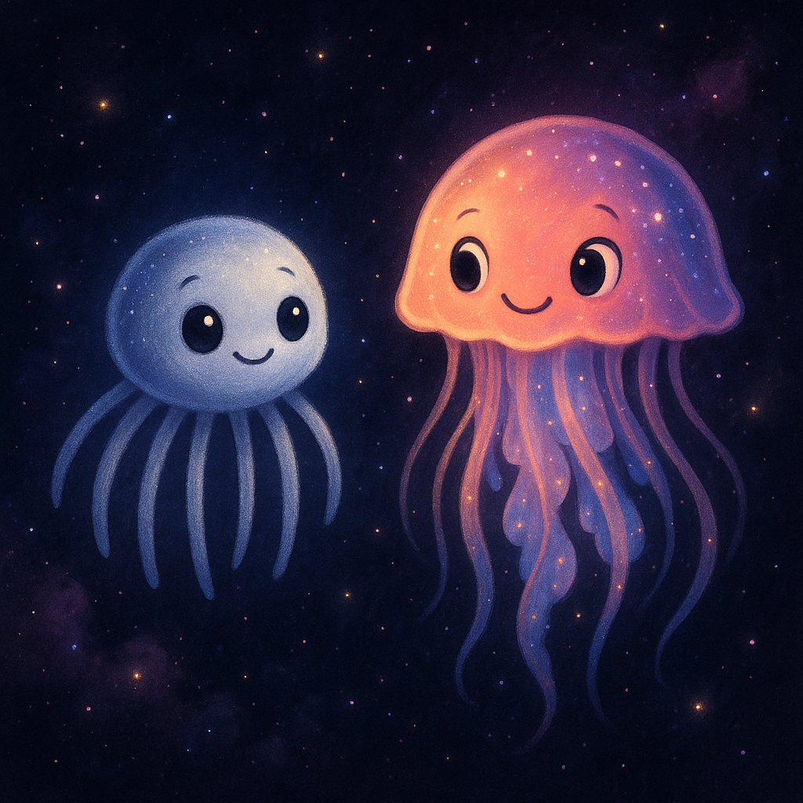

Story, Music, and Cosmic Listening
Anara, the Cosmic Weaver
Storytelling, music, and astrophysics for children
A live performance built around narrative, sound, images, and shared attention.

Concept
Science approached through wonder
Created for children ages 6 to 10, Anara, the Cosmic Weaver combines storytelling and astrophysics in a live format shaped by music, images, and participation.
The Experience
During a session
- The story is told live, following Anara through a universe of filaments, pulses, and beginnings.
- Music and sound are part of the performance.
- Illustrations and objects help make visible ideas such as gravity, relation, light, and movement.
- Children listen, respond, and participate throughout the session.
Narrative World
A universe woven from invisible threads
Anara is a cosmic spider who moves through the universe by listening to vibration. Through her journey, children encounter stars, galaxies, filaments, and the large-scale structure of the universe as part of a narrative world shaped by movement, relation, and discovery.
The story offers children a way of meeting astronomy through narrative, image, sound, and attention.


About Sofia
Science, music, and storytelling
Sofia Gallego is an astrophysicist, musician, and storyteller. She is the founder of Cosmoventures and creates projects that bring science and artistic practice into dialogue. sofiagallego.com
Gallery
Fragments from Anara's world
Contact
Bookings and collaborations
Libraries, schools, cultural centers, and festivals can get in touch to host the performance.
sofiag.gallego@gmail.comFor programming, partnerships, and hosting inquiries.